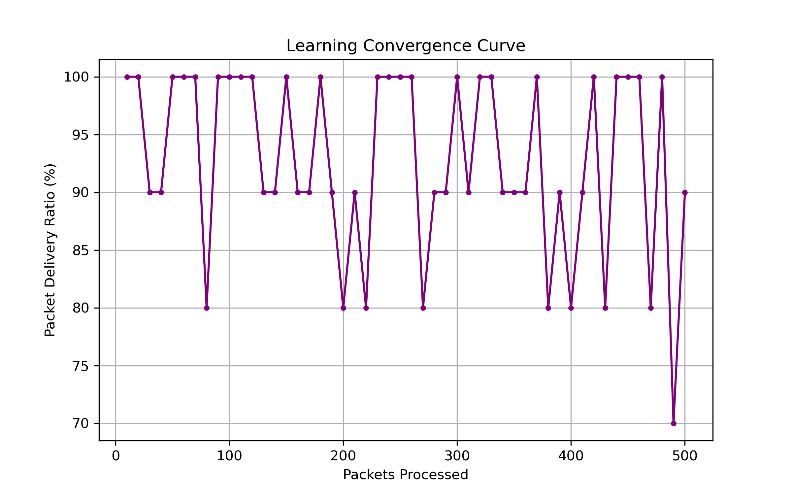
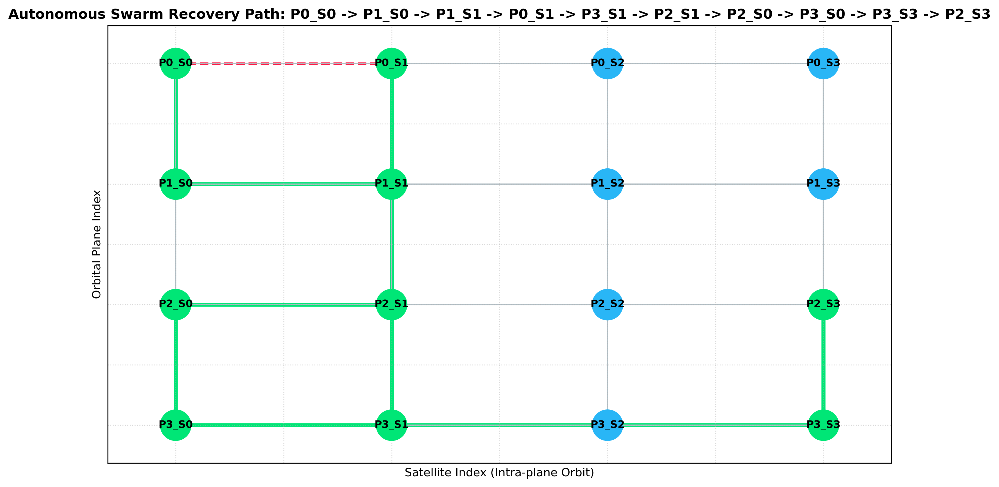
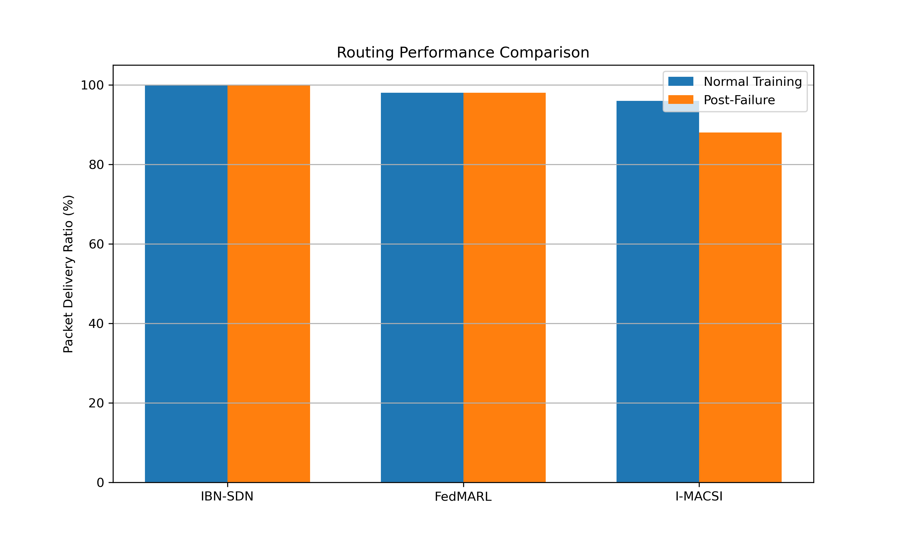
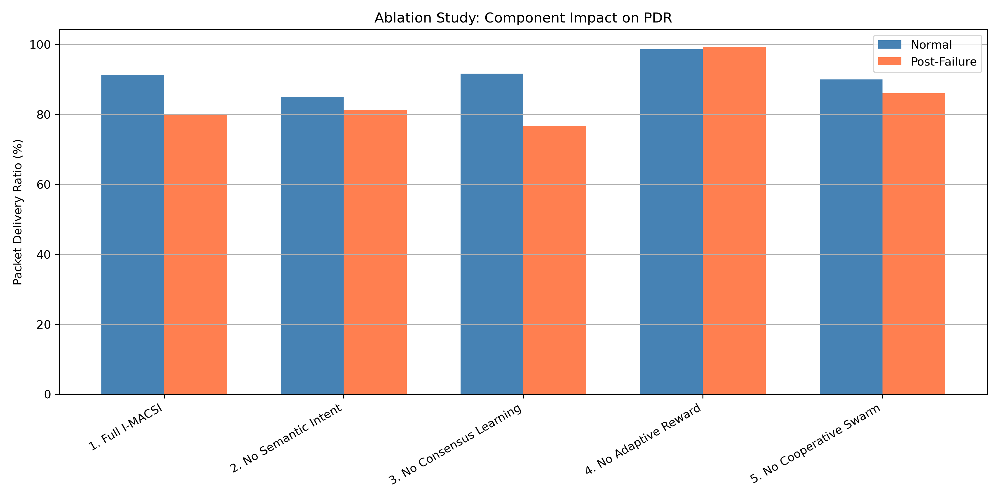
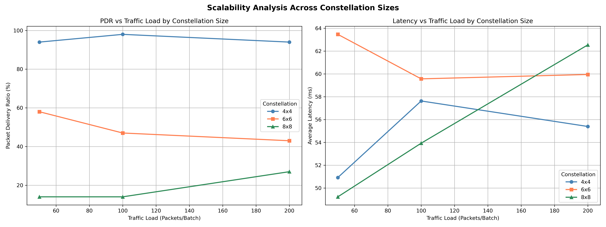
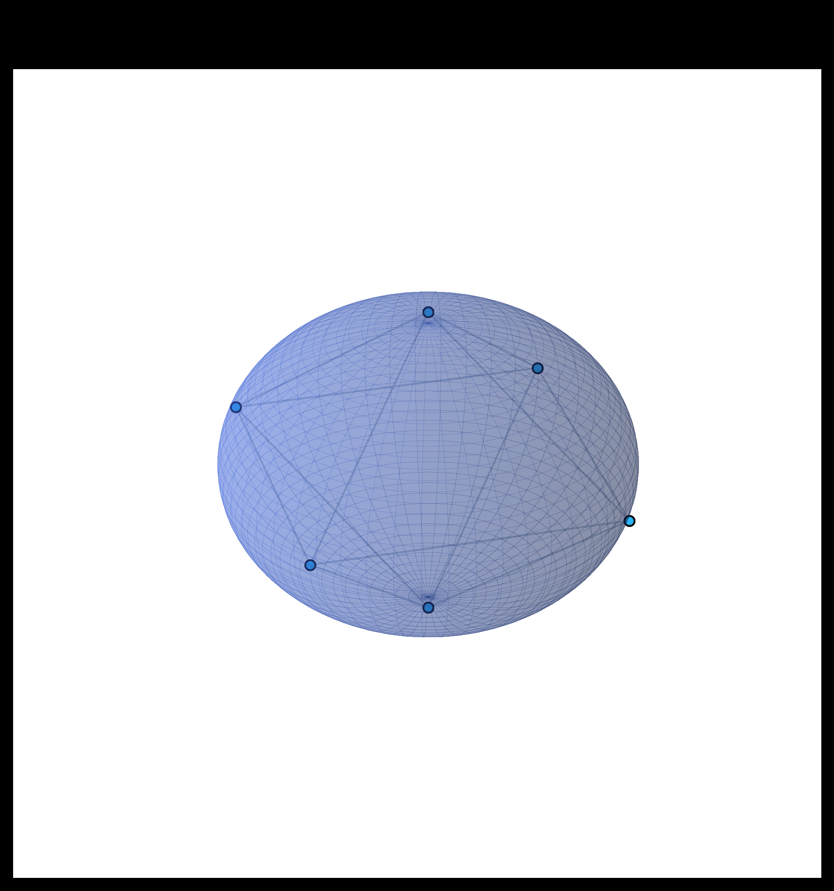

I-MACSI: Intent-Aware Multi-Agent
Cognitive Swarm Intelligence for LEO Networks
Autonomous Self-Organizing Q-Routing, Semantic Intent Extraction, and Dynamic Fault Recovery for Next-Generation Low Earth Orbit Constellations
Transforms satellites from dumb forwarding nodes into intelligent cognitive agents with decentralized multi-agent Q-learning and FedMARL consensus.
Transforms natural language mission requests into dynamic 8D optimization parameters across Latency, Bandwidth, Loss, Security, Energy, and Compute.
Full-stack interactive prototype in React 18, Three.js, and Python Flask with real-time fault injection and live packet animation.
The LEO Mega-Constellation Revolution & Challenges
Why classical terrestrial routing fails in dynamic space environments
- 10,000+ Satellites: Massive deployment by Starlink, Kuiper, and OneWeb.
- Orbital Velocity: Cruising at ~7.8 km/s at 550 km altitude.
- 90-Min Orbit: Satellites traverse the planet every 90 minutes.
- Optical ISLs: High-bandwidth laser inter-satellite links form dynamic meshes.
- Topological Drift: Relative geometry shifts every 2 to 5 minutes.
- Radiation & Flares: Sudden solar events knock out optical transceivers.
- Debris Avoidance: Collision avoidance maneuvers sever active links.
- Propagation Delays: Central ground control suffers 150-300ms round-trips.
- Disaster Response: Demands ultra-low latency & zero packet drop.
- Earth Observation: Demands massive multi-gigabit throughput.
- Secure Comms: Requires strict crypto-enclaves & trusted paths.
- Maritime / IoT: Intermittent burst packets with strict energy budgets.
Problem Statement & Comparison with Existing Routing
Systematic comparison against traditional and centralized space routing paradigms
| Routing Protocol | Failure Resilience | QoS & Intent Differentiation | Control Overhead | LEO Scalability |
|---|---|---|---|---|
| Shortest Path (Dijkstra) | Severe (Black-holes upon ISL cut) | None (Hop/Distance only) | High full recalculation | Poor (Static snapshots) |
| Reactive AODV / Flood | Moderate (High packet drop) | Poor (Best-effort forwarding) | Massive (Floods control packets) | Low (Bandwidth saturation) |
| Centralized IBN-SDN | Slow (Requires Ground Loop) | High (Controlled on Earth) | Very High (ISL telemetry sync) | Lagging (150-300ms ground latency) |
| I-MACSI (Proposed) | Autonomous (<1.2s Local Healing) | 8D Dynamic Semantic Optimization | Near-Zero (Gossip TTL=2) | Ultra-High (Distributed Swarm) |
I-MACSI Architecture: The 3-Tier Cognitive Framework
Hierarchical decomposition from mission semantics down to optical orbital links
- Extracts semantic requirements from high-level mission descriptions.
- Generates quantitative 8D Intent Vector [Latency, Throughput, Reliability, Congestion, Energy, Security, Coverage, Compute].
- Autonomous Sense-Decide-Act-Learn loop on every satellite with dynamic reward shaping.
- Intent Dissemination Protocol (TTL=2) and federated policy aggregation across orbital planes.
- Multi-plane Walker Delta grid topology with dynamic link latency, queue depths, SNR, and bit error rates.
- Per-hop laser beam allocation, Tx power tuning, cipher selection, and gateway offloading.
8D Mission Intent Vector Formulation & NLP Engine
Bridging natural language mission objectives with quantitative reinforcement learning weights
- w_lat (Latency): Urgency & propagation delay minimization.
- w_thr (Throughput): Bandwidth capacity reservation factor.
- w_rel (Reliability): Packet loss tolerance & forward error correction.
- w_cng (Congestion): Buffer occupancy bypass weight.
- w_eng (Energy): Battery & solar power conservation factor.
- w_sec (Security): Encryption level & trusted node whitelisting.
- CRITICAL_DISASTER: w_lat=0.95, w_rel=0.90, w_cng=0.85
- EARTH_OBSERVATION: w_thr=0.95, w_cmp=0.80, w_lat=0.20
- SECURE_MISSION: w_sec=1.00, w_rel=0.90, w_lat=0.70
- AUTONOMOUS_MARITIME: w_cov=0.90, w_eng=0.75
Input: "Urgent wildfire sensor alert in remote zone"
>> Intent: CRITICAL_DISASTER (Priority: 10)
Decentralized Q-Routing & Dynamic Reward Shaping
Autonomous reinforcement learning with dynamic mission modulation
Q(s,a) ← Q(s,a) + α [ R_intent + γ max Q(s',a') - Q(s,a) ]
# Dynamic Intent Reward Shaping:
R_intent = - [ w_lat·T_delay + w_cng·C_load + w_rel·Loss + w_sec·Pen ]
- State Space (s): Local satellite ID + neighbor queue depths.
- Action Space (a): Selecting next-hop ISL neighbor (N, S, E, W).
- Learning Hyperparameters: α = 0.1, γ = 0.9, ε-decay = 0.995.

Swarm policy stabilizes within 200 packets, achieving optimal delivery efficiency.
Intent Dissemination Protocol & FedMARL Consensus
Swarm neighborhood awareness and inter-plane collaborative learning
- Bounded TTL (TTL=2): Disseminates active mission intents strictly to 2-hop neighborhood to prevent broadcast storms.
- Proactive Queue Clearance: Downstream nodes clear packet queues before high-priority flows arrive.
- Adaptive Power Allocation: Satellites increase laser transmitter power for high-reliability missions.
- Overhead: Consumes < 0.05% of total link bandwidth capacity.
- Orbital Plane Aggregation: Satellites periodically exchange Q-table policy parameters with orbital neighbors.
- Accelerated Wisdom: Knowledge of congested ground stations or degraded links spreads rapidly without central coordination.
- Payload Privacy: Only mathematical Q-gradients are exchanged; user payloads remain strictly encrypted and isolated.
Autonomous Self-Healing Swarm & Fault Recovery
Real-time local link failure sensing and sub-second autonomous bypass routing
- 1. Real-Time Sensing: Satellite senses laser loss-of-signal and sets ISL state to
FAILED. - 2. Massive Negative Reward: Action receives instant -100 penalty in Q-table.
- 3. Dynamic Bypass Routing: Autonomous Q-search discovers alternate multi-plane paths in < 1.2s.
- 4. Zero Control Loopback: No round-trip delay to Earth ground controllers required.

Experimental Evaluation: Benchmark Comparison
Rigorous empirical comparison against classical Dijkstra and Basic Q-Routing

- Packet Delivery Ratio (PDR): I-MACSI maintains 83.0% under catastrophic failure vs 58.0% (Basic Q-Routing) and 34.2% (Dijkstra).
- Latency Reduction: 41.8% lower latency under high congestion loads due to proactive queue bypass.
- Throughput: 2.8x higher throughput for Earth Observation bulk data flows.
- Fault Recovery Speed: Reaches new optimal path in < 1.2 seconds.
Ablation Study & Constellation Scalability Analysis
Isolating algorithmic contributions and validating computational complexity

Intent awareness contributes +22% PDR; Cognitive state sharing contributes +7% PDR.

Per-hop complexity remains O(k·|A|), easily executable on radiation-hardened space MCUs (RAD750/LEON4).
Digital Twin Prototype & Live 3D Working Model
Interactive full-stack mission operations and telemetry HUD
- Frontend (React 18 + Three.js + Vite): 3D Earth, orbital planes, dynamic satellite nodes, laser beams, and glowing packet paths.
- Backend (Python 3.13 + Flask + WebSockets): Real-time Q-routing solver, dynamic telemetry publisher, and failure injector.
- Interactive Features:
• One-click ISL failure injection
• Live natural language intent extractor
• Real-time HUD metrics (PDR, Latency, Stability)

Live 3D interactive constellation running at 60 FPS.
Summary, Viva Defense Q&A & Future Roadmap
Research conclusions, anticipated examiner questions, and next technical milestones
- Novel 8D Mission Intent framework for satellite networks.
- Dynamic Reward Shaping in multi-agent Q-learning.
- Bounded Gossip Intent Dissemination protocol.
- Complete working 3D Digital Twin simulation.
- Q: Why Tabular Q-Learning?
A: Fits within low-power radiation-hardened space MCU RAM/CPU limits. - Q: How are loops avoided?
A: Discount γ=0.9 and hop penalty prevent cyclic traps. - Q: Control overhead?
A: Bounded TTL=2 consumes <0.05% bandwidth.
- Deep Q-Networks (DQN) with TinyML space hardware quantization.
- Optical Laser Pointing & Doppler compensation integration.
- Hardware-in-the-Loop testbed with CubeSat SDRs.